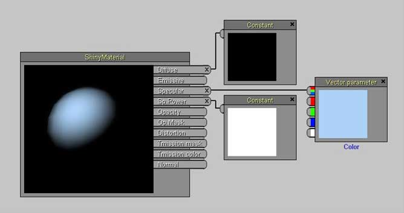
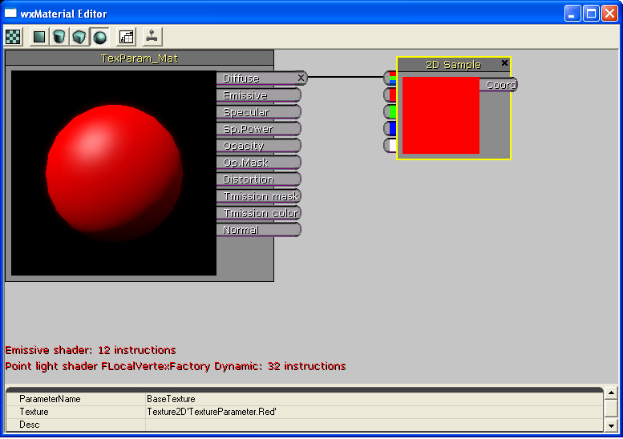

UDN
Search public documentation:
InstancedMaterialsJP
English Translation
中国翻译
한국어
Interested in the Unreal Engine?
Visit the Unreal Technology site.
Looking for jobs and company info?
Check out the Epic games site.
Questions about support via UDN?
Contact the UDN Staff
中国翻译
한국어
Interested in the Unreal Engine?
Visit the Unreal Technology site.
Looking for jobs and company info?
Check out the Epic games site.
Questions about support via UDN?
Contact the UDN Staff
インスタンス化したマテリアル
ドキュメントの概要: マテリアルのインスタンス化についての説明 ドキュメントの変更ログ: Scott Sherman により作成。 Dave Burke? と Amitt Mahajan? により更新。概要
Unreal Engine 3 のマテリアルのインスタンス設定は、面倒なマテリアルの再コンパイルをせずに外観を変更するのに最適な方法です。 通常、マテリアルの修正には再コンパイルが不可欠ですが、インスタンスはマテリアルの既定パラメータ値を変更するだけで修正できます。 名前、タイプ、そしてデフォルト値を設定してコンパイルしたマテリアルのパラメータは、静的に定義されています。マテリアルをインスタンスに設定すれば、このパラメータを新たな値に非常に簡単に変更することができます。 インスタンス設定していないマテリアルをプリミティブとして適用するには、抽象基本クラスのMaterialInterface を使います。このクラスは MaterialInstance （マテリアル インスタンス） のサブクラスで、適用したマテリアルの表現とパラメータ値のインターフェイスとなります。マテリアルのクラスは、表現とデフォルトパラメータ値が定義されている[MaterialInterface]のサブクラスです。MaterialInstanceConstant （マテリアルの定数インスタンス） クラスは、MaterialInstance の ParentMaterialInstance （親マテリアルインスタンス） を持つサブクラスです。MaterialInstanceConstant は、表現とパラメータ値を親マテリアルから継承しますが、継承パラメータを無効にすることもできます。エディタにおけるマテリアル インスタンスの作成
エディタでマテリアルのインスタンスを作成するには、 汎用ブラウザ リファレンス の新規メニューを使って MaterialInstanceConstant を作成します。これは、明示的に定義されたパラメータ値を持つマテリアル インスタンスです。次にマテリアル インスタンス エディタでこのマテリアル インスタンスを編集します。詳細についてはマテリアル インスタンス エディタユーザーガイド ドキュメントを参照してください。パラメータ化したマテリアルの作成
マテリアルのパラメータ定義は、マテリアルエディタで ScalarParameter (スカラー パラメータ） か VectorParameter (ベクタ パラメータ） のいずれかの表現タイプを用いて行います。ScalarParameter は一項目の浮動小数点パラメータ、VectorParameter は 4 項目の浮動小数点数値のパラメータです。パラメータには名称とデフォルト値を定義します。
VectorParameterによるマテリアルの編集マテリアルにパラメータ化したテクスチャの作成
マテリアルにテクスチャ パラメータを追加するには、マテリアル エディタで、TextureSampleParameter2D (2次元テクスチャのサンプルパラメータ)、TextureSampleParameter3D、または TextureSampleParameterCube (立方体テクスチャのサンプルパラメータ) のいずれかの表現タイプを使います。TextureSampleParameter2D は Texture2D のパラメータ、TextureSampleParameter3D は Texture3D のパラメータ、そして TextureSampleParameterCube は TextureCube です。シェーダーのコードはテクスチャ タイプごとに作り分けられているので、個別のテクスチャ タイプが必要です。パラメータに名前とデフォルト テクスチャを定義してから使います。
TextureSampleParameter2D によるマテリアルの編集静的パラメータ
静的パラメータはコンパイル時に適用されます。静的パラメータによりマスクアウトされたマテリアルのブランチ全体がコンパイルアウトされ、ランタイムに実行されないので、より適化されたコードが生成されます。適用がコンパイル時なので、変更は マテリアルインスタンス エディタ 内でしか行えず、スクリプトからは変更できません。 警告: 新規マテリアルは、インスタンスが使用するベース マテリアル内のすべての静的パラメータの組み合わせに対してコンパイルアウトされます。 その結果、膨大な量のシェーダーがコンパイルされる可能性があります。マテリアル内の静的パラメータの数と、実際に使用される静的パラメータの順列数をを最小限に抑えるようにしてください。具体的な静的パラメータ タイプについては、 MaterialsCompendium#Static_Switch_Parameter および MaterialsCompendium#Static_Component_Mask_Parameter (マテリアル要約ページ) を参照してください。Time Varying Material インスタンス
マテリアルの変更についての情報については マテリアルインスタンス Time Varying をご覧ください。プログラマー用
スクリプトでのマテリアルのインスタンス化
スクリプトで編集できるマテリアルのインスタンスを作成するには、UnrealScript の新用語を用いて MaterialInstanceConstant のオブジェクトを新規作成します。SetParent 関数でインスタンスの表現とデフォルトパラメータ値を定義するマテリアルを設定します。そして、SetScalarParameterValue もしくは SetVectorParameterValue 関数で、インスタンスのパラメータ値を変更します。 ここで、UnrealScript で書かれた、パラメータ編集可能なマテリアル インスタンスの作成から適用までのコーディング例を紹介します。:
var MeshComponent Mesh;
var MaterialInstanceConstant MatInst;
var float TanPercent;
function InitMaterialInstance()
{
MatInst = new(None) Class'MaterialInstanceConstant';
MatInst.SetParent(Mesh.GetMaterial(0));
Mesh.SetMaterial(0, MatInst);
UpdateMaterialInstance();
}
function UpdateMaterialInstance()
{
MatInst.SetScalarParameterValue('TanPercent',TanPercent);
}
function Timer()
{
if(/*character is outside*/)
TanPercent = Lerp(/*tanning rate*/,TanPercent,1.0);
UpdateMaterialInstance();
}